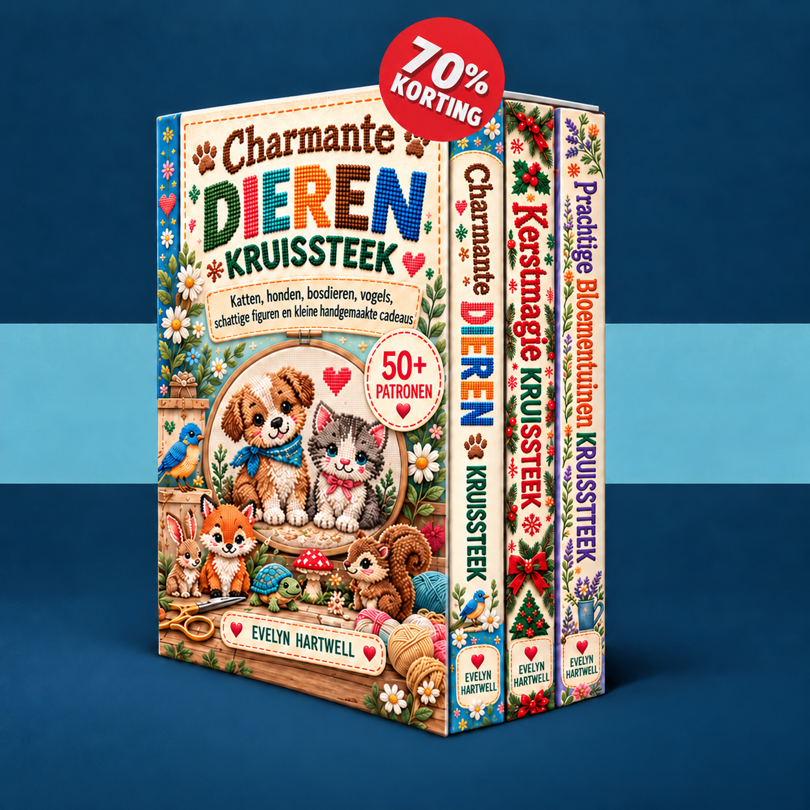

Kies een klein motief, leer het telpatroon lezen en borduur stap voor stap je eerste project.
Je patronen worden geladen…
Schakel JavaScript in voor het ledengedeelte of open je boeken rechtstreeks via de onderstaande links.
Een e-mail sturen